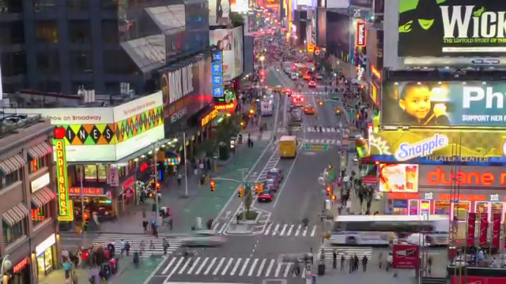
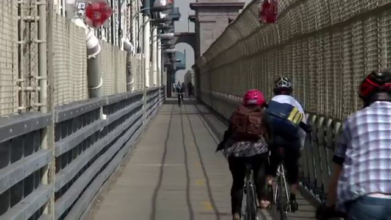
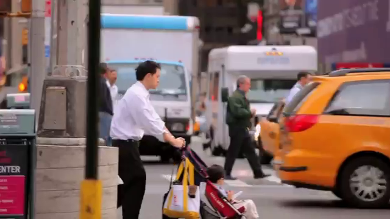
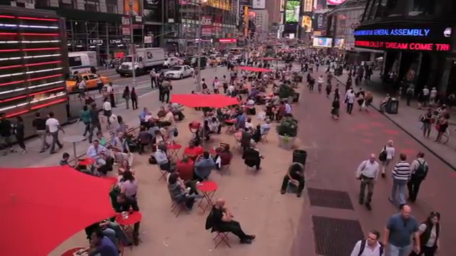
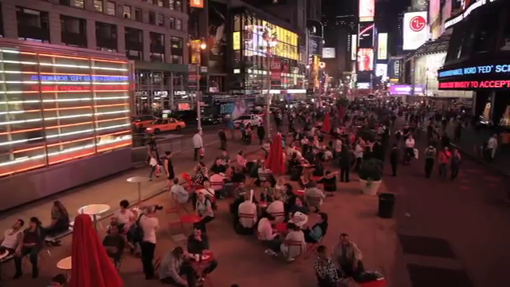

(49459)Our agenda is to unclog our streets so that commerce doesn’t get stifled.

(76709)When you really start looking at streets in a people-oriented way rather than a car-oriented way, it just starts to make sense.

(100960)We just rolled out two hundred miles of on-street bike lanes in the last three years so we now have over four hundred and fifty miles of on-street bike lanes, which is creating a real network.

(207769)So many of them were trading the safety of the sidewalk for dangerous streets because there just wasn't enough room.
(218950)They were very dysfunctional streets.

(261820)And so the way we re-engineered our streets is not only to make them better from a safety perspective, better for mobility perspective, but it’s better business.

(316370)Once you realize that you can use your street to improve the quality of life, the economic and environmental health of your city, I think that's a transformative moment.
(327609)So mayors around the world are looking at their streets differently and you don't have to be a big city like New York to be able to make important changes that matter to millions of people each and every day.